Permissible Parameter Trajectories
Contents
Introduction
An LPV system is a time-varying, state-space model of the form:
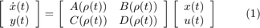
The LPV model in Equation (1) describes how the LPV system depends on a set of time-varying parameters. Its important to understand that for practical applications (e.g. analysis in the LPV framework) each time-varying parameter in (1) has associated with it a set of permissible parameter trajectories, which describe how the parameter can change with time in the model. The permissible parameter trajectories contstrain the parameter values to those for which the model is valid.
The set of allowable trajectories for a particular parameter satisfies two properties: First, the parameter's value remains inside some interval of allowable values 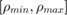 (an interval on the real line). Second, the parameter's rate of change lies inside some interval 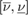 (also an interval on the real line). Hence, for an LPV system that only depends on a single parameter 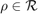, a permissible trajectory is any trajectory such that: 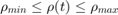 and 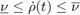 for all 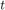. A trajectory is said to be "rate unbounded" if 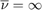 and 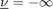.
Example
Lets assume the LPV model in Equation (1) represents an aircraft, and that the model is scheduled on altitude 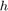. If this particular model is only valid for a limited range of altitudes : 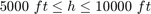, and for slow variations in altitude 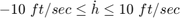, then the set of permissible parameter trajectories contains any altitude trajectory such that
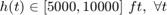
and
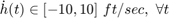.
An example of a permissible parameter trajectory for this system is shown in Figure 1.
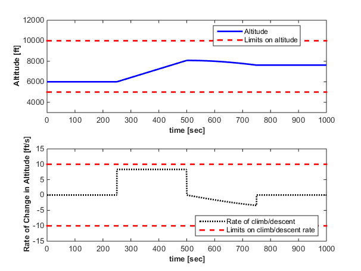
Figure 1: A permissible altitude trajectory.
Formal Definition
Given an LPV system that depend on a set of time-varying parameters 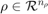. A permissible parameter trajectory is any trajectory such that 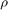 lies inside the compact set 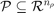 and 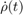 lies inside the set 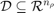. The set 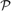 is the 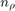 dimensional hyper rectangle formed by 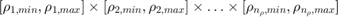, and the set 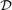 is the dimensional hyper rectangle formed by 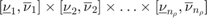.